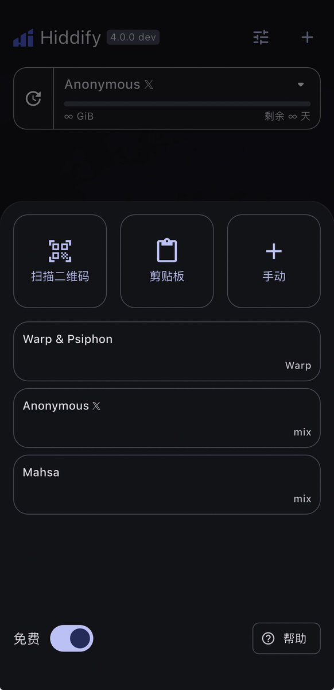
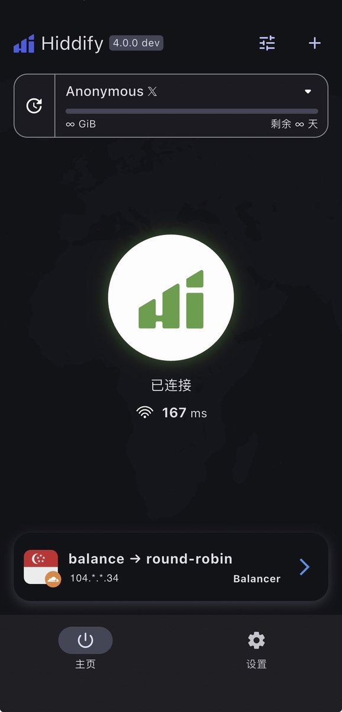

👾Iris-de-lux 🍥
@theforeveriris
@Bitgold_Hold 还真有


极简经济学
@Bitgold_Hold
这几天梯子出问题，给大家分享一款良心VPN，这就是大名鼎鼎的伊朗大神力作Hiddfiy，包括苹果IOS版都有。
这款VPN亮点在于还提供免费节点，永不失联！打开界面，点击右上角“+“，打开左下角“免费”，立即出现三组免费订阅链接。其中一组是专为𝕏提供的匿名节点，速度贼快！ https://t.co/8rlFr6DMBB